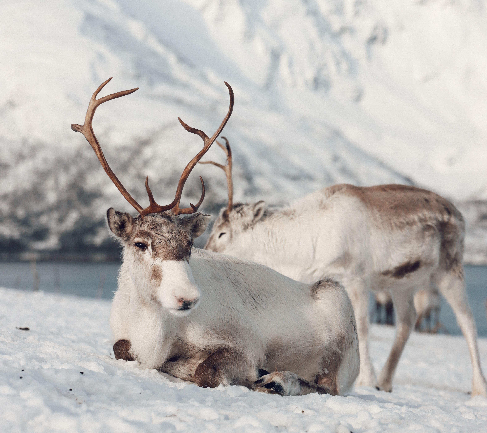

Track reindeer
from space.
Guiding the future of sustainable grazing. We are building the world's most advanced satellite platform for Arctic herd management.
Guiding the future of sustainable grazing. We are building the world's most advanced satellite platform for Arctic herd management.
Unlike traditional GPS collars that only track a handful of animals, our platform provides comprehensive landscape intelligence without requiring physical infrastructure or additional hardware.
We combine historical migration patterns with real-time terrain data to anticipate where your herd will move next—saving you days of fuel and manual searching.
We turn raw satellite data into clarity. By processing Copernicus imagery and NDVI vegetation indices, we give you a precise, daily picture of grazing quality beneath the snow cover.

Managing herds across the Arctic tundra has always been a battle against time, extreme weather, and vast distances. We bridge the gap between aerospace engineering and traditional herd management by solving three core challenges:
1. Vast Distances: Stop relying solely on fuel-heavy snowmobile trips and manual field observations to locate your animals.
2. Blind Spots: Traditional GPS collars only track a few animals and provide zero information about forage quality. We monitor the entire landscape.
3. Climate Uncertainty: Adapt to changing snow conditions and unpredictable vegetation growth with real-time orbit data.
Backed by Norinnova and Arctic Ignite. A multidisciplinary team spanning reindeer husbandry, scalable software engineering, and geospatial analytics.

CEO / Product Lead
Sámi entrepreneur from Senja with deep domain expertise in reindeer husbandry. Leads our product vision, customer dialogue, and business development.

CTO / Software Engineer
Architect of the SpaceDeer cloud infrastructure. Responsible for backend systems, satellite data processing, and scalable platform architecture.

GIS & Data Engineer
Transforms complex Earth observation data into clear, actionable maps. She leads our geospatial analysis, ensuring our terrain and vegetation insights are highly accurate.